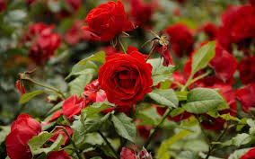
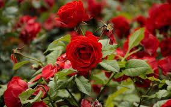
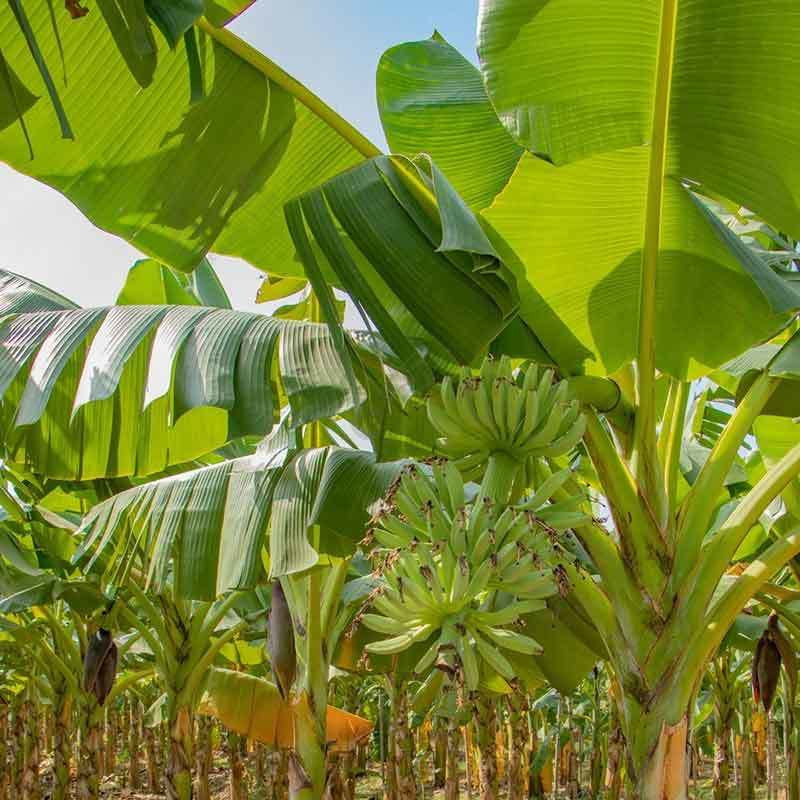
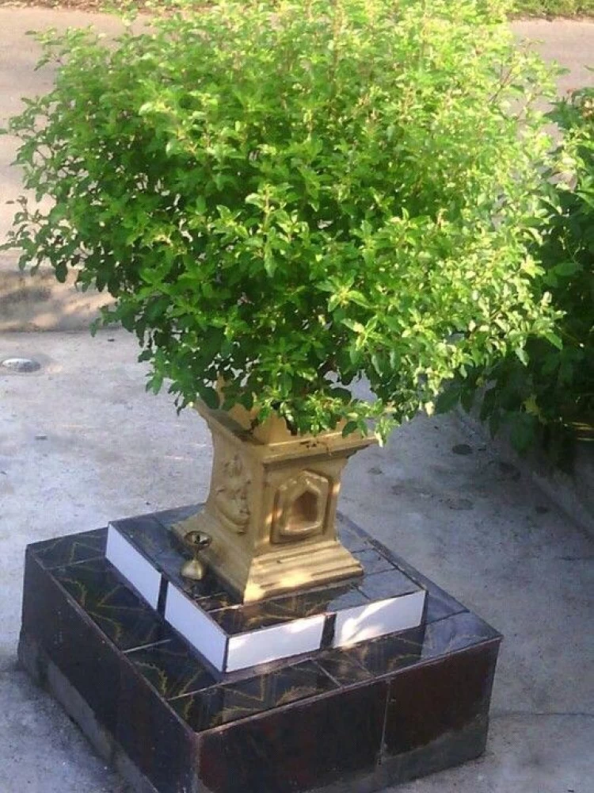

Rose Species Becoming Endangered
Scientists have found that some species of roses are becoming endangered due to habitat loss. Efforts are underway to conserve these beautiful plants.
Latest Updates on Plants, Animals, and Landscapes
Scientists have found that some species of roses are becoming endangered due to habitat loss. Efforts are underway to conserve these beautiful plants.
A fungal disease, commonly known as Panama disease, is spreading across banana plantations, threatening global banana production.
Tulasi (Holy Basil) is gaining attention for its numerous health benefits. Research shows it may help reduce stress and improve immunity.
Conservationists are raising alarms about the increasing rate of elephant poaching for ivory. New measures are being implemented to protect these majestic animals.

Habitat loss due to human encroachment is a major threat to lion populations in Africa. Initiatives are in place to create wildlife corridors.

Efforts to conserve the Green Sea Turtle have ramped up, focusing on protecting nesting sites and reducing plastic pollution in oceans.

Many regions worldwide are facing desertification, which threatens agriculture and biodiversity. Efforts are being made to restore these landscapes.

Coastal areas are experiencing increased erosion due to climate change. Community-driven efforts are underway to protect these vital regions.

Forests play a crucial role in mitigating climate change. New studies emphasize the importance of reforestation and sustainable land use practices.